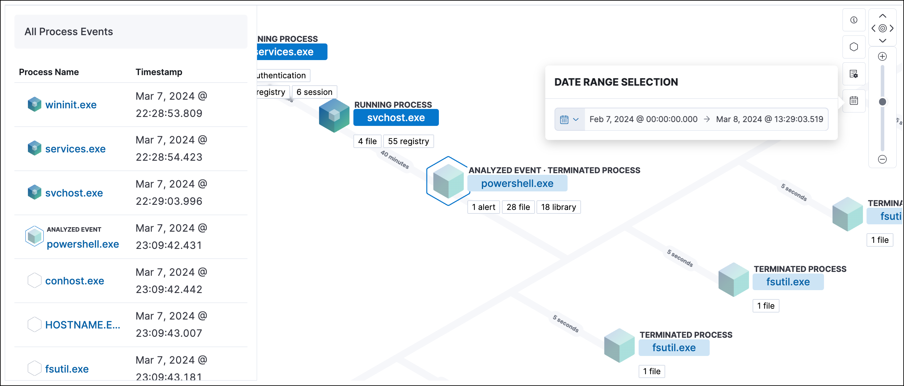

What’s new in 8.15edit
Here are the highlights of what’s new and improved in Elastic Security. For detailed information about this release, check out our release notes.
Other versions: 8.12 | 8.11 | 8.10 | 8.9 | 8.8 | 8.7 | 8.6 | 8.5 | 8.4 | 8.3 | 8.2 | 8.1 | 8.0 | 7.17 | 7.16 | 7.15 | 7.14 | 7.13 | 7.12 | 7.11 | 7.10 | 7.9
Detection rules and alerts enhancementsedit
The following enhancements have been added to detection rules and alerts:
Per-field diff for Elastic prebuilt rule updatesedit
When examining an updated Elastic prebuilt detection rule, you can now view rule changes field by field as well as in a full JSON view.

Alert suppression supported for indicator match rulesedit
Alert suppression now supports the indicator match rule type. You can use it to reduce the number of repeated or duplicate detection alerts created by an indicator match rule.
Refined header design for alert details flyoutedit
The header design for the alert details flyout has been refined to improve readability and structure. Basic alert details now appear clearer and more organized.

Persistence of Data Quality dashboard resultsedit
The Data Quality dashboard now retains results across sessions, ensuring continuity of information. Additionally, the dashboard now shows when each index was last checked.
Visual event analyzer enhancementsedit
The Visual event analyzer UI has been enhanced with the following functionality:
-
Inline actions and a search bar to the left panel:

-
A date and time range picker, which allows you to analyze an event within a specific period of time:
 -
A data view selector, which allows you to filter analyzed events further:

Response actions enhancementsedit
The following enhancements have been added to response actions:
Automated response actions for host processesedit
You can now add Elastic Defend’s kill-process or suspend-process response actions to detection rules. This allows you to automatically terminate or suspend a process on an affected host when an event meets the rule’s criteria.
Third-party response actions (SentinelOne)edit
You can now direct SentinelOne to perform response actions on protected hosts without leaving the Elastic Security UI. You can isolate and release a host from detection alerts and the response console, and view third-party actions in the response actions history log.
Entity Analytics enhancementsedit
The following enhancements have been added to Entity Analytics:
Asset criticalityedit
You can now assign an asset criticality level to your entities based on their importance to your organization. For example, you can assign Extreme impact to business-critical entities, or Low impact to entities that pose minimal risk to your security posture.
The risk scoring engine includes asset criticality as an input when calculating entity risk scores.
With asset criticality, you can strengthen your threat detection capabilities by focusing your alert triage, threat-hunting, and investigation activities on high-impact entities.
Enhanced host and user details flyoutsedit
The redesigned host details flyout and user details flyout allow you to:
- View entity risk data and all risk contributions. Expand the risk summary section to view details about the entity’s risk contributions.
- View and assign asset criticality to your entities.
- View relevant entity details such as the entity ID, when the entity was first and last seen, and the associated IP addresses and operating system.
Cloud Security enhancementsedit
The following enhancements have been added to Cloud Security:
Benchmark rules can be turned offedit
You can now turn individual benchmark rules on or off. This allows you to customize your Cloud Security Posture Management (CSPM) and Kubernetes Security Posture Management (KSPM) integrations to reduce noise from benchmark rules that don’t apply to your environment.

Cloud native vulnerability management (CNVM) Findings UI enhancementsedit
The Vulnerabilities table on the Findings page now includes improved grouping capabilities (up to three nested groupings), and more table customization options.
Custom fields for cases must have a default valueedit
When adding custom fields to a case, any mandatory fields must have a default value.